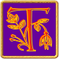

If you can see this box, your browser or internet device may not fully comply with current Web Standards
This site has been designed with Web Standards compliance in mind. It conforms to XHTML 1.0 Transitional and CSS 2.0 and will look its best when viewed in a browser that also complies with these standards. However, care has also been taken to ensure that the content of this site will remain accessible to anyone, regardless of which browser or internet device they may be using to view it.
 ystara, unlike most
fantasy settings, has no Gods to interfere in the affairs of mortals on a regular
basis. Instead Mystara is blessed with a multitude
of Immortals, incredibly powerful beings who are worshipped by mortals as deities,
but who were once mortal themselves and who only occasionally interfere in the
affairs of mortals. Ascension to immortality is often the goal of mighty adventurers
and, on Mystara, this possibility may not be at all
that unlikely.
ystara, unlike most
fantasy settings, has no Gods to interfere in the affairs of mortals on a regular
basis. Instead Mystara is blessed with a multitude
of Immortals, incredibly powerful beings who are worshipped by mortals as deities,
but who were once mortal themselves and who only occasionally interfere in the
affairs of mortals. Ascension to immortality is often the goal of mighty adventurers
and, on Mystara, this possibility may not be at all
that unlikely.
Originally introduced in the Dungeon & Dragons: Set 5: Immortal Rules "Gold Box" [Gold], this theme was later expanded upon in the world-shaking Wrath of the Immortals set [WotI], in which a war between different factions among the Immortals forever changes the face of the world and the intricacies of arcane magic on Mystara.
 his document contains conversions for a large majority of the Immortals found in the Mystara source material which, for most purposes, fill the same niche that the Gods and Goddesses do in other d20 fantasy settings. Each entry includes a complete list of the domains that the Immortal makes available to his or her clerics.
Editor's Note: The Mystara-3E Project Team does have plans to provide game mechanics for the process of becoming and playing Immortal Characters in Mystara. The team has made some progress towards this goal, aided by the release of the "High Level Guidebook" and "Deities and Demigods", but there are still a number of details to work out.
PRODUCT IDENTITY NOTICE
The names and details of each Immortal included herein are Product Identity belonging to Wizards of the Coast
Quick Links into this file
Sphere: Each Immortal in Mystara is a servant of one of five Spheres of Power: Matter, Energy, Time, Thought and Entropy, which represent the purest sources of power in the Mystaran Multiverse. Immortals which serve the same Sphere of Power have a common interest — the preservation and advancement of their own Sphere (frequently at the expense of all other Spheres), but they are not the tightly-knit team one might otherwise suspect. In life, they each belonged to different species, different cultures, different classes, and different alignments. In Immortality, they will work together for the benefit of their Sphere but they also relentlessly plot against one another for the advancement of their personal plots and private interests.
Immortal Rank: Mystaran Immortals maintain a hierarchy system that cuts across the lines of Sphere association. In ascending order the ranks are: Initiate, Temporal, Celestial, Empyreal, Eternal, and Hierarch. These six different ranks are based on the amount of personal power a given Immortal wields. Initiates, the lowest-ranking Immortals, are those who have just recently been promoted from mortal existence. At the other end are the Hierarchs, the highest-ranking and most senior Immortals, who effectively rule over all lesser immortals, both within their own Sphere of Power and among the Immortal community as a whole, and frequently make universe-shaping decisions.
Favored Weapon: The first item listed is the weapon favored by the Immortal. Clerics frequently consider it a point of pride to wield their patron's favored weapon.
The second item is for the "weapon of the deity" spell, which is available in the Defenders of the Faith "splatbook" accessory [DotF]. This spell is not officially considered to be available in the 3E Mystara Conversion, but we have chosen to provide these details as an aid to any DM who has this sourcebook and wishes to allow the clerics in her Mystara campaign to use this spell.
Domains: Those marked with bold font are new to the Mystara Campaign Settings and are linked to the appropriate entry in the list of Clerical Domains contained in the Magic in Mystara section of this web site.
Prestige Domains: These are described in detail in the supplement Defenders of the Faith [DotF] and may only be taken in conjunction with an appropriate prestige class. If you do not own Defenders of the Faith, you may safely ignore these domains.
Granted Power: All Mystaran immortals provide a specific granted power to their followers. In exchange, clerics of that immortal must forego one of the two granted powers provided by their chosen domains. Unless otherwise specified, shamans of that immortal receive this power instead of the Find Familiar class ability.

Sphere: Thought (Celestial)
Alignment: CG
Favored Weapon: harpoon; weapon of the deity: +1 shock harpoon
Domains: Animal, Ocean, Protection, Sphere of Thought, Storm
Prestige Domains: Beastmaster, Community, Exorcism, Mind, Mysticism, Summoning
Granted Power: All spells targeted on animals operate at +1 caster level. All Fire spells operate at -1 caster level. You are treated as though you have the Endurance feat for any checks related to swimming.
Additional Description TBD
Sphere: Time (Initiate)
Alignment: LN
Favored Weapon: scimitar; weapon of the deity: +1 mighty cleaving scimitar
Domains: Desert Oasis, Family, Knowledge, Law, Sphere of Time, War
Prestige Domains: Community, Divination, Inquisition, Glory, Summoning
Spontaneous Casting: Clerics of Al-Kalim may only spontaneous cast for Cure spells, not Inflict spells.
Worshipper Alignment: Clerics of Al-Kalim may not be Evil.
Granted Power: You gain access to the new spell detect water as part of your standard spell list. You can cast predict weather as a spell-like ability once per day. Knowledge (Nature) is a class skill.
A warrior, scholar, ruler and visionary, Al Kalim led the Ylari people for a quarter century in both peace and war. Before his apparent death a century ago, he was responsible for uniting the Ylari tribes into a single nation, driving out the occupying troops of the Thyatian and Alphatian empires. He was also responsible for compiling the Nahmeh: a collection of wisdom, parables, military tactics, rules of government and his vision of a Desert Garden in which the arid deserts of Ylaruam would one day be turned into a lush green nation. He is now worshipped as the principle Immortal of the Emirates of Ylaruam.
He usually appears to his clerics in the form of a strong but elderly man with wise eyes, a long white beard and simple clerical robes. When battle is called for, he appears as a desert warrior: tall, handsome, hook-nosed and bearded riding a magnificent stallion. His holy symbol is the silhouette of a palm tree growing out of the desert with a moon rising behind it.
Sphere: Entropy (Empyreal)
Alignment: CE
Favored Weapon: longsword and whip; weapon of the deity: +1 mighty cleaving longsword or +1 flaming whip
Domains: Chaos, Destruction, Evil, Fire, Hatred, Sphere of Entropy,
Prestige Domains: Madness, Mysticism, Summoning
Granted Power: You gain the Sneak Attack ability of a rogue half your level (minimum level 1). This ability stacks with any levels in other classes that provide Sneak Attack. This effective rogue level also contributes to whether you can overcome a rogue's immunity to flanking (see the Uncanny Dodge class ability).
Also known as "The Roaring Fiend", Alphaks is dedicated to spreading evil and destruction. In particular he seeks to destroy Alphatia and its people and finds most of his followers from those who share his hate for them.
He appears as a Balor Demon with a sword in one hand and a whip in the other. His holy symbol is a horned skull against a background of fire shaped like a phoenix.
Sphere: Energy (Celestial)
Alignment: NG
Favored Weapon: Quarterstaff; weapon of the deity: +1 spell storing quarterstaff
Domains: Protection, Magic, Spell, Sphere of Energy
Prestige Domains: Celerity, Community, Mysticism, Summoning
Granted Power: You receive a bonus metamagic feat of your choosing.
Patroness of the Alphatian people, Alphatia preaches pacifism and the study of the magical arts.
She appears as a young and beautiful copper-skinned Alphatian woman, barefoot and humbly dressed in poor-quality robes with no jewelry. Her holy symbol is a glowing shield with paints dabbed on it like an artist's palette.
Sphere: Entropy (Celestial)
Alignment: LE
Favored Weapon: Flail; weapon of the deity: +1 mighty cleaving light flail
Domains: Evil, [Pestilence]†, Sphere of Entropy, Suffering, Tyranny
Prestige Domains: Divination, Domination, Mysticism, Pestilence, Summoning
Granted Power: You receive Skill Focus (Spot) and Skill Focus (Search) as free feats. Spot and Search as class skills
† DMs who own the Defenders of the Faith supplement [DotF] should allow Clerics of Arik to choose the Pestilence prestige domain as a standard domain.
Additional Description TBD
Sphere: Thought (Eternal)
Alignment: TN
Favored Weapon: Dagger; weapon of the deity: +1 keen dagger
Domains: Sphere of Thought, Thieves, Trade, Trickery
Prestige Domains: Mind, Summoning
Granted Power: You receive Bluff as a class skill and Skill Focus Bluff as a bonus feat. You have the ability to 'take 10' on this skill check if used for trading or bargaining.
Patron of both Merchants and Thieves, Asterius is worshipped in Thyatis and as the principle Immortal in the Church of Karameikos.
He appears as a middle-aged, black-haired obese man in ancient robes, often with a broad smile on his face. His holy symbol is the moon.
Sphere: Matter (Hierarch)
Alignment: LG
Favored Weapon: hand axe; weapon of the deity: +1 keen hand axe
Domains: Law, Nobility, Protection, Sphere of Matter, Truth
Prestige Domains: Community, Exorcism, Mysticism, Summoning
Granted Power: You receive Iron Will as a bonus feat.
The patron Immortal of the Atruaghin Clans. Atruaghin is noted for his kindness, wisdom, honesty and open-mindedness and advocates violence as a last resort. As a mortal, Atruaghin was responsible for uniting the warring tribes of the Clans and bringing peace to the region. He subsequently led the Clans in a successful revolt against invading goblins and interceded with the Immortals to create the great plateau where the Clans now live in safety. He still visits the Clans once a year.
Atruaghin is also responsible for the creation of a breakaway group of Azcans in the Hollow World who have rejected Atzanteotl's teachings and now follow the "New Way".
Atruaghin appears as a middle-aged chieftain of the Clans, usually wearing a war bonnet. When he wishes to make an impact he rises from the flames of a campfire as a great warrior made of fire.
Sphere: Entropy (Hierarch)
Alignment: LE
Favored Weapon: Longsword; weapon of the deity: +1 longsword of venom (as the dagger)
Domains: Corruption, Death, Evil, Sphere of Entropy, Suffering
Prestige Domains: Domination, Mysticism, Summoning
Granted Power: You may use a pain touch once per day. Make a melee touch attack against a living creature and, on a successful attack, bestow on that creature a -2 enhancement penalty to Strength and Dexterity for 1 minute. This spell-like ability does not affect creatures immune to critical hits.
Atzanteotl is worshipped by the Azcans (in both the Known World and Hollow World) and by such habitually evil humanoids as orcs, goblinoids, ogres etc. Once a member of the Elven race that came to be known as Shadow Elves his principal goal is the destruction of all life on the outer world, particularly the elves of Alfheim. He has inspired all Shadow Elves with their hatred and envy of Alfheim but he is no longer worshipped by the Shadow Elves who now follow the Immortal Rafiel instead.
Atzanteotl is fascinated by the process of corruption and enjoys nothing better than seeing formerly good beings turn to evil.
He appears in one of two forms: a handsome but sinister elven hero dressed in black or a jet-black feathered serpent with the face of an elf. His holy symbol is the silhouette of a feathered serpent.
Back To TOP
Sphere: Entropy (Celestial)
Alignment: CE
Favored Weapon: none; weapon of the deity: +1 mighty cleaving greatclub
Domains: Destruction, Evil, Fortitude, Sphere of Entropy, Strength
Prestige Domains: Celerity, Mysticism, Summoning
Granted Power: You gain 'Scent' as an extraordinary ability and a +2 profane bonus to saves vs. poison.
Special: Clerics and Shamans of Bagni have no specific time when they need to prepare their spells. Preparation is performed by means of a ritual eating which takes the place of the usual prayer and meditation and can be performed as often as required. Spells are prepared at a rate of one spell level per hit die of eaten foe and foes are eaten at a rate of 1 hit die per ten minutes. As with other divine casters, however, any spells cast within the previous 8 hours count against the number of spells that can be prepared.
Additional Description TBD
Sphere: Thought (unknown)
Alignment: NG
Favored Weapon: Greatsword; weapon of the deity: +1 frost greatsword
Domains: Planning, Protection, Sphere of Thought, War
Prestige Domains: Mysticism, Summoning
Granted Power: Free Martial Weapon Proficiency in Greatsword (if necessary) and Weapon Focus Greatsword.
Additional Description TBD
Sphere: Energy (Celestial)
Alignment: CE
Favored Weapon: Morningstar; weapon of the deity: +1 mighty cleaving morningstar
Domains: Chaos, Evil, Sphere of Energy, Trickery, War
Prestige Domains: Domination, Mysticism, Summoning
Granted Power: You may wield a Morningstar one size
larger than you in one hand.
This is similar to the Monkey Grip feat† but without the -2 attack penalty or
need for prerequisites. Note, you may only wield one Morningstar in this way
- any weapon in your offhand must be no larger than your size. The large Morningstar
is the same as a greatclub but with both piercing and bludgeoning attributes.
† The Monkey Grip feat can be found in the Sword and Fist supplement [S&F].
Additional Description TBD
Sphere: Energy (Initiate)
Alignment: CE
Favored Weapon: Spear; weapon of the deity: +1 keen shortspear
Domains: Chaos, Destruction, Hatred, Sphere of Energy, War
Prestige Domains: Domination, Mysticism, Summoning
Granted Power: You receive +1 caster level on all spells that enhance weapons or weapon-based combat. Knowledge (War) is a class skill.
Additional Description TBD
Sphere: Energy (Initiate)
Alignment: LG
Favored Weapon: Mace; weapon of the deity: +1 shock heavy mace
Domains: Craft, Fire, Good, Metal, Sphere of Energy, Trade
Prestige Domains: Exorcism, Inquisition, Mind, Mysticism, Summoning
Granted Power: You receive Darkvision as a supernatural ability. If you already have Darkvision, your range is increased by 30 ft.
Benekander gained his Immortality during the events of the Wrath of the Immortals campaign [WotI]. He was an assistant engineer on a spaceship that landed on Mystara thousands of years ago and, until recently, his life force has been trapped within a powerful artifact created by the explosion of the ship.
Benekander still thinks of himself as mortal and is devoted to interfering with Immortals who manipulate mortals for their own ends.
He appears as a seven-foot tall green-skinned, blue-eyed man with black hair and a neatly trimmed beard and moustache. He wears a blue jumpsuit with black boots and belt and carries a circular mirrored shield. His holy symbol shows a dog (a beagle) in a jumpsuit wearing a hardhat, carrying an adjustable wrench in one hand and rapping it into the palm of his other hand.
Sphere: Entropy (Temporal)
Alignment: NE
Favored Weapon: Dagger; weapon of the deity: +1 frost dagger
Domains: Charm, Darkness, Hatred, Sphere of Entropy, Thieves, Trickery
Prestige Domains: Domination, Mysticism, Summoning
Granted Power: You gain the Sneak Attack ability of a rogue half your level (minimum level 1). This ability stacks with any levels in other classes that provide Sneak Attack. This effective rogue level also contributes to whether you can overcome a rogue's immunity to flanking (see the uncanny dodge class ability).
Additional Description TBD
Back To TOP

Sphere: Time (Celestial)
Alignment: NG
Favored Weapon: Trident; weapon of the deity: +1 defending trident
Domains: Animal, Healing, Ocean, Plant, Sphere of Time, Water
Prestige Domains: Beastmaster, Community, Mysticism, Summoning
Granted Power: You have the supernatural ability to breathe water as if under the effect of a water breathing spell, for up to 10 rounds per level. This effect occurs automatically as soon as it applies, lasts until it runs our or is no longer needed, and can operate multiple times per day (up to the total daily limit of rounds).
Calitha Starbrow is patron of the Water Elves of Minrothad. Primarily interested in the sea, Calitha created the philosophy known as elendaen, "the ocean path", which teaches that the ocean is the cradle of all life. It encourages her followers never to abuse the sea and its resources, teaching preservation of the sea and sea-life.
Calitha appears as an elven woman with mother of pearl skin and a glittering diamond star worn in the center of her forehead. Her clothes are made of sea-shells and sea-plants. Her holy symbol is a giant pearl lying in mother-of-pearl.
Sphere: Time (Celestial)
Alignment: NG
Favored Weapon: Quarterstaff; weapon of the deity: +1 defending quarterstaff
Domains: Healing, Renewal, Plant, Sphere of Time
Prestige Domains: Exorcism, Mysticism, Summoning
Granted Power: You may cast all healing spell at +1 caster level.
Additional Description TBD
Sphere: Matter (Initiate)
Alignment: LG
Favored Weapon: Composite Longbow; weapon of the deity: +1 shock greatclub
Domains: Animal, Healing, Knowledge, Plant, Sphere of Matter
Prestige Domains: Beastmaster, Celerity, Community, Divination, Exorcism, Glory, Mysticism, Summoning
Granted Power: All knowledge skills are class skills.
You cast divinations at +1
caster level.
Additional Description TBD
Sphere: Matter (Temporal)
Alignment: CN
Favored Weapon: Spear; weapon of the deity: +1 shock shortspear
Domains: Animal, Ocean, Sphere of Matter, Water
Prestige Domains: Beastmaster, Community, Domination, Glory, Mind, Summoning
Granted Power: You receive the spell-like ability to change yourself into a Mako Shark and back again once per day (as per the Druid wildshape ability).
Additional Description TBD
Sphere: Matter (Celestial)
Alignment: CE
Favored Weapon: Battleaxe; weapon of the deity: +1 shock battleaxe
Domains: Chaos, Illusion, Sphere of Matter, Trickery
Prestige Domains: Domination, Madness, Mysticism, Summoning
Granted Power: You may create a gust of wind,
as the spell once per day. This is
a spell-like ability and requires a standard action to activate. Bluff is a
class skill.
Additional Description TBD
Back To TOP

Sphere: Entropy (Celestial)
Alignment: LE
Favored Weapon: Spear; weapon of the deity: +1 shortspear of venom (as the dagger)
Domains: Animal, Death, Evil, Sphere of Entropy, Suffering, War
Prestige Domains: Beastmaster, Domination, Mysticism, Summoning
Granted Power: You gain Skill Focus (Intimidate) and Skill Focus (Leadership) as bonus feats. Although the Leadership feat is gained immediately it cannot be used until the Cleric reaches the pre-requisite character level 6. Intimidate is a class skill.
Additional Description TBD
Sphere: Entropy (Eternal)
Alignment: CE
Favored Weapon: Tentacle (Whip); weapon of the deity: +1 frost whip
Domains: Charm, Chaos, Destruction, Evil, Reptile, Sphere of Entropy
Prestige Domains: Domination, Madness, Mysticism, Summoning
Granted Power: You may cause confusion, as the spell, to all creatures within 5 ft. if they fail a Will save vs. DC 11 + wisdom modifier. This spell-like ability is an enchantment, compulsion, mind-affecting effect. The power can operate multiple times per day so long as the total duration is within the daily limit of one round per level per day.
Additional Description TBD
Sphere: Matter (Celestial)
Alignment: LG
Favored Weapon: (none); weapon of the deity: +1 flaming longsword
Domains: Fire, [Glory]†, Law, Metal, Reptile, Sphere of Matter
Prestige Domains: Community, Exorcism, Glory, Inquisition, Divination, Mysticism, Summoning
Granted Power: You may turn or destroy undead as a cleric one level higher.
† DMs who own the Defenders of the Faith supplement [DotF] should allow Clerics of Diamond to choose the Glory prestige domain as a standard domain.
Diamond is the ruler of all Lawful dragons (Crystal, Sapphire, Ruby and Gold). Polite to those who show generous and noble natures he is capable of tremendous anger at the petty or selfish.
He appears as a colossal gold dragon over a 100 ft. in length but with white scales, not gold, which refract light like a faceted diamond. His holy symbol is a crown shaped like a snake swallowing its tail with a huge diamond set in the top of the snake's head.
Sphere: Thought (Celestial)
Alignment: CG
Favored Weapon: Spear; weapon of the deity: +1 mighty cleaving shortspear
Domains: Chaos, Fortitude, Good, Sphere of Thought, Will
Prestige Domains: Celerity, Exorcism, Mind, Mysticism, Summoning
Granted Power: Free Improved Initiative feat.
Known by many as the "Patroness of Will", Diulanna is noted for her determination and drive. She favors any who are willing to take on impossible odds because of their beliefs and often directly intervenes to help such heroes. She is also the special patron of the Hinterlanders, the descendents of her original people, the Neathar.
Diulanna appears as a young redheaded woman in the garb of the ancient Neathar (tunic, loincloth, buskins and a lion-skin headband). She carries a stone-tipped spear and always appears to mortals with a grim and serious expression on her face. Her holy symbol is a boulder with a spear thrust clean through it.
Sphere: Matter (Hierarch)
Alignment: LN
Favored Weapon: War hammer; weapon of the deity: +1 defending war hammer
Domains: Earth, Knowledge, Law, Plant, Planning, Sphere of Matter, Sun
Prestige Domains: Divination, Inquisition, Summoning
Spontaneous Casting: Non-evil clerics of Djaea may only spontaneous cast for Cure spells, not Inflict spells.
Granted Power: You receive the ability to use your
0-2nd level spell slots for
Druid spells as though a druid of the same level.
Djaea is primarily concerned with preservation of the environment and the pursuit of knowledge to help planets survive environmental catastrophes. She directly opposes the destructive activities of the Immortals of Entropy such as Atzanteotl, Orcus and Thanatos. She has something of the manner of a stern schoolmistress, disapproving of unruly behavior and infuriated by misunderstanding, misinformation and ignorance.
Djaea appears as a stately, beautiful woman, close to middle-age, dressed in a long white gown. Her holy symbol is a large white stone with a serpent curled around it.
Back To TOP

Sphere: Energy (Empyreal)
Alignment: CN
Favored Weapon: Shortsword; weapon of the deity: +1 shock shortsword
Domains: Chaos, Elf, Illusion, Knowledge, Sphere of Energy, Trickery
Prestige Domains: Celerity, Community, Divination, Summoning
Granted Power: You receive Skill Focus Search as a bonus feat and the elven ability to notice secret doors that you pass even when not actively looking. Search is a class skill.
Eiryndul is the patron of the Shiye Elves of Alphatia. The Shiye are a clan of Elves that Eiryndul persuaded to break away from the elves of Alfheim and settle in the dark forests of central Alphatia. Not happy with the traditional Elven values, Eiryndul teaches his followers to be more secretive, mischievous and independent than most elves. He is also a protector of the forest races for whom he has some affection.
Eiryndul is a prankster but his, pranks, though clever and sometimes malicious are never dangerous or lethal. The same can not be said for the antics of fellow trickster Immortal Loki with whom Eiryndul shares a bitter rivalry. Eiryndul is also known for his romantic escapades including the pursuit of attractive mortal adventurers who catch his eye.
Eiryndul appears as a short, sly-looking elf dressed in regal style wearing a crown of gold embossed with pictures of forest folk (especially fauns and dryads) frolicking. His holy symbol is a grinning set of teeth (like the Cheshire Cat's) on a black background.
Back To TOP
Sphere: Matter (Temporal)
Alignment: CN
Favored Weapon: Javelin; weapon of the deity: +1 returning javelin
Domains: Animal, Fate, Muse, Protection, Sphere of Matter, Trickery
Prestige Domains: Beastmaster, Summoning
Granted Power: You can speak with animals, as the spell, once per day per level as a spell-like ability.
Faunus is a self-centered Immortal, concerned almost exclusively with self-gratification. The one exception is his role as protector of the forest races as well as herd-beasts such as goats and sheep. He rarely interacts with mortals.
He appears as a faun or satyr, sometimes young and handsome, sometimes old, fat and drunken. His holy symbol is a drinking horn with ram's horns.
Sphere: Matter (Temporal)
Alignment: LG
Favored Weapon: Longsword; weapon of the deity: +1 keen longsword
Domains: Good, [Inquisition]†, Law, Sphere Of Matter, Truth
Prestige Domains: Divination, Exorcism, Glory, Inquisition, Mysticism, Summoning
Granted Power: You gain Alertness as a bonus feat. Spot and Listen are class skills.
Special: Godar (clerics from the Northern Reaches) of Forsetta have access to Rune Magic‡
† DMs who own the Defenders of the Faith supplement [DotF] should allow Clerics of Forsetta to choose the Inquisition prestige domain as a standard domain.
‡ The details of Rune Magic are still TBD.
Additional Description TBD
| Frey | Freyja |
|---|---|
|
Sphere: Thought (Celestial) Alignment: NG Favored Weapon: Longsword; weapon of the deity: +1 defending long sword Domains*: Family, Knowledge, Nobility, Protection, Sphere of Thought Prestige Domains: Celerity, Community, Exorcism, Mind, Mysticism, Summoning Granted Power*: You gain Martial Weapon Proficiency (Longsword) and Weapon Focus (Longsword) as free bonus feats. Special: Godar (clerics from the Northern Reaches) of Frey have access to Rune Magic.† |
Sphere: Thought (Celestial) Alignment: NG Favored Weapon: Dagger; weapon of the deity: +1 flaming dagger Domains*: Fate, Healing, Nobility, Romance, Sphere of Thought Prestige Domains: Celerity, Community, Divination, Exorcism, Mind, Mysticism, Summoning Granted Power*: You gain Weapon Finesse (Dagger) and Weapon Focus (Dagger) as free bonus feats. You gain a +2 sacred bonus on charisma checks to influence NPC attitudes. Special: Godar (clerics from the Northern Reaches) of Freyja have access to Rune Magic.† |
† The details of Rune Magic are still TBD.
* Worshippers in Vestland often worship Frey and Freyja together. Such clerics must choose one domain from each immortal's list and have the following granted power: You gain Martial Weapon Proficiency (Longsword) as a free feat. You gain a +2 sacred bonus on charisma checks to influence NPC attitudes.
Frey and Freyja are brother and sister and are principally worshipped in the Northern Reaches where they are very popular amongst the common people (as opposed to the more war-like nobility). Part of the reason for this is that they are not as warlike as some of the other Northern Reaches Immortals. They believe that you should avoid warfare if possible and fight intelligently if not. They are also patrons of love and friendship which adds to their appeal. They are also worshipped in the Hollow World as Fredar and Fredara.
Frey is Odin's counselor while Freyja seeks out the spirits of fallen heroes whom Odin might want to reincarnate to do good in the world.
As brother and sister they look very much alike. Both appear tall, blond, beautiful and lean wearing the armor and clothing of the Northern Reaches and often adorned with items of fine jewelry. Frey's holy symbols are a golden boar (the creature that pulls his chariot through the air) and a crossed scepter and sickle. Freyja's symbol is a Pegasus, her favorite mount.
Back To TOP
Sphere: Matter (Temporal)
Alignment: NG
Favored Weapon: Battleaxe; weapon of the deity: +1 throwing battleaxe
Domains: Craft, Gnome, Protection, Sphere of Matter, Trickery
Prestige Domains: Community, Creation, Mysticism, Summoning
Granted Power: You receive a +2 sacred bonus on all craft skills.
Additional Description TBD
Sphere: Energy (Empyreal)
Alignment: CG
Favored Weapon: Sword; weapon of the deity: +1 shock longsword
Domains: Good, Sphere of Energy, Storm, Truth, War
Prestige Domains: Exorcism, Glory, Mysticism, Summoning
Granted Power: You gain Martial Weapon Proficiency in
a sword of your choice (if
required) and Weapon Focus in that sword.
Special: Clerics of Gorm must be male. Clerics in
the Lost City must qualify for
full membership of the Brotherhood of Gorm cult (they must be proficient in
at least three Martial or Exotic weapons or have at least three combat feats
related to Martial or Exotic weapons - e.g. Proficiency, Weapon Focus, Weapon
Finesse, etc.). The feats associated with Gorm's granted power contribute to
this requirement.
Additional Description TBD
Sphere: Matter (Empyreal)
Alignment: NG
Favored Weapon: Trident; weapon of the deity: +1 keen trident
Domains: Ocean, Protection, Sphere Of Matter, Water
Prestige Domains: Community, Mysticism, Summoning
Granted Power: You gain the ability to produce a 120 ft. long cone-shaped blast of water as a standard action. The force of the blast automatically extinguishes candles, torches, and similar unprotected flames. It causes protected flames, such as those of lanterns, to dance wildly and has a 50% chance to extinguish these lights. Creatures of medium-size or smaller are dazed for 1d6 rounds. Ships caught in the area of effect take 3d6 points of damage. When used underwater or aimed at the surface of water, this ability will create a 50 ft. long cone-shaped underwater current that can sweep away objects in its path. If you already have the water blast ability, the size of the blast is a cone twice the normal length.
Additional Description TBD
Sphere: Matter (Eternal)
Alignment: TN
Favored Weapon: None; weapon of the deity: +1 frost/+1 flaming double-sword
Domains: Knowledge, Magic, Planning, Reptile, Sphere of Matter, Strength, Sun
Prestige Domains: Divination, Summoning
Granted Power: You gain the ability to fly (as the fly spell) as a supernatural ability for 10 minutes per level per day. If you can already fly, your maneuverability rating is improved by one factor (i.e. clumsy becomes poor, poor becomes average, average becomes good, good becomes perfect). Activation of this power is a free action. The power can operate multiple times per day (up to the total daily limit of minutes).
The Great One is the ruler of all Dragonkind, including the other three dragon Immortals Diamond, Opal and Pearl. The Great One is always calm, collected and analytical.
He appears as a Colossal Great Wyrm with three heads, bigger than any dragon that ever lived. His scales glow so brightly that mortals can barely look at him. His holy symbol is a three-headed dragon.
Back To TOP
Sphere: Thought (Celestial)
Alignment: LG
Favored Weapon: Shortspear and Short Sword; weapon of the deity: +1 mighty cleaving shortspear
Domains: Craft, Good, Nobility, Planning, Protection, Sphere of Thought, War
Prestige Domains: Community, Exorcism, Inquisition, Glory, Mind, Mysticism, Summoning
Granted Power: You gain a +2 luck bonus on attack and damage rolls against kobolds, goblinoids, ogres, orcs, trolls and gnolls.
Halav is principally worshipped in the lands of the Traldar including the Traladarans of Karameikos, the Traldar of the Hollow World and in the new Milenian Empire rising on the southern continent of Mystara. In ancient times he was a great hero and King who, together with his lover Queen Petra and his chief adviser Zirchev (now also Immortals) led the defense of the Traldar nation against the invading Gnoll King and his hordes, killing him and saving his people in the process.
A thinking man's warrior, Halav was a tough fighter, a master strategist, an inspired leader and a shrewd judge of character. As an Immortal he is a patron of human warriors and an enemy of the warlike humanoid races (especially gnolls). He is also a patron of weapon making.
Halav appears as a tall, red-headed warrior wearing ancient bronze armor and a plain golden crown while carrying an ancient bronze short sword. His holy symbol is of a sword on an anvil.
Although the members of this splinter cult strongly believe that they receive their powers from Halav, their aims are both frequently opposed to those supported by orthodox Clerics of Halav and of an evil nature, therefore the true source of their powers is unknown.
Sphere: Thought (unknown)
Alignment: unknown, but presumably LE
Favored Weapon: Shortspear and Short Sword; weapon of the deity: +1 shock shortspear
Domains: [Domination]†, Nobility, Sphere of Thought, War
Prestige Domains: Domination, Inquisition, Mysticism, Summoning
Granted Power: You gain the Spell Focus (Enchantment) feat.
† DMs who own the Defenders of the Faith supplement [DotF] should allow Clerics of the Cult of Halav to choose the Domination prestige domain as a standard domain.
Additional Description TBD
Sphere: Matter (Celestial)
Alignment: LG
Favored Weapon: Stone Hammer; weapon of the deity: +1 flaming war hammer
Domains: Cavern, Craft, Law, Plant, Sphere of Matter, Trade, War
Prestige Domains: Community, Exorcism, Glory, Mysticism, Summoning
Granted Power: You gain Martial Weapon proficiency in any hammer and a bonus Skill Focus Diplomacy feat.
Special: All followers of Hattani must wield stone hammers in battle.
Additional Description TBD
Sphere: Entropy (Hierarch)
Alignment: NE
Favored Weapon: Sword; weapon of the deity: +1 frost longsword
Domains: Darkness, Death, Evil, Sphere of Entropy, Suffering, Undeath
Prestige Domains: Creation, Mysticism, Pestilence, Summoning
Granted Power: You may Command or Rebuke undead as a cleric one level higher.
Special: Godar (clerics from the Northern Reaches) of Hel have access to Rune Magic.†
† The details of Rune Magic are still TBD.
Hel's worship is primarily confined to the Northern Reaches where she is the patron of Death. Unlike most Entropic Immortals, Hel sees Entropy as an important part of the natural balance of the multiverse. She is particularly interested in reincarnation, seeking out the spirits of the most evil to be reincarnated into children who will grow into positions of power.
Hel always appears dressed in black with one half of her face that of a beautiful woman and the other half blank and featureless. She is usually seen seated on a dark stone throne with human skulls on the corners of the back. The image of this throne is her holy symbol.
Sphere: Matter (unknown)
Alignment: LG
Favored Weapon: Sword; weapon of the deity: +1 keen short sword
Domains: Earth, Good, Hin, Protection, Sphere of Matter
Prestige Domains: Community, Mysticism, Summoning
Granted Power: You may prepare detect water as a first level spell. You receive darkvision to a range of 10 ft. per level as a supernatural ability (this does not stack with existing darkvision).
Additional Description TBD
Back To TOP

Sphere: Energy (Hierarch)
Alignment: LG
Favored Weapon: Longsword; weapon of the deity: +1 defending longsword
Domains: Elf, Magic, Plant, Protection, Sphere of Energy, Sun
Prestige Domains: Community, Creation, Mysticism, Summoning
Granted Power: You gain the Alertness feat as a bonus feat. Spot and Listen are class skills.
Known by many as "The Wise One", Ilsundal is the patron protector of all elves and the creator of the first tree of life. Kindly, wise, peaceful and philosophical he can be stern and iron-willed when he needs to be. Ilsundal's greatest enemy is Atzanteotl who corrupted the Schattenalfen to evil.
He appears as an old, wise-eyed elf although his clothes and hair color vary from appearance to appearance so as not to suggest that he is the patron of any specific sub-race of elves. His holy symbol is the silhouette of an oak tree.
Sphere: Energy (Hierarch)
Alignment: NG
Favored Weapon: Two-Handed Sword; weapon of the deity: +1 flaming two-handed sword
Domains: Fire, Knowledge, Planning, Sphere of Energy, Strength, Sun
Prestige Domains: Community, Creation, Exorcism, Glory, Mysticism, Summoning
Granted Power†: You may Turn or Destroy undead as a cleric one level higher.
† Ethengarian Clerics who revere Ixion as Tubak receive the following Granted Power instead: You may Discern Lies, as the spell, for up to 1 round per level per day. This is a spell-like ability that requires a standard action to activate. The power can operate multiple times per day (up to the daily limit in rounds).
Ixion, "The Sun-Prince," is considered to be the embodiment of the sun in all its glory and has been followed by mortals since the most ancient of times. Legends say that he was also the father of the first centaur and, for this reason, is worshipped by the forest races, and centaurs in particular. In the Hollow World, Ixion is worshipped under the name Otzitiotl and is one of the chief Immortals of the Oltecs. He was also worshipped by the Azca, although most of the Azca have now turned to Atzanteotl's evil teachings. In the Ethengar Khanates he is known as Tubak, a bringer of sunlight and Order and on other worlds he is known as Solarios.
Ixion is interested in the collection of knowledge and is dedicated to opposing the forces of Entropy. He demands that his followers follow a simple code: seek peace but be harsh in war; deny aid to the forces of Entropy; and give Ixion (or whatever name he is known by) his due. Despite his passion for knowledge and scholarly mind, Ixion's fiery nature makes him passionate and hot-tempered. He is easily offended but equally quick to forgive. This balance between Lawful and Chaotic tendencies account for the neutral aspect of his alignment.
Ixion appears as a member of whatever race he is addressing. Whatever his form, he always appears with golden hair almost too bright to look at, flaming eye sockets and glowing golden skin. He dresses in light robes of brightly glowing golden silk and rides a giant flaming chariot-wheel (which is his holy symbol).
Back To TOP
Sphere: Entropy (Initiate)
Alignment: CE
Favored Weapon: Greatclub; weapon of the deity: +1 mighty cleaving greatclub
Domains: Evil, Destruction, Hatred, Sphere of Entropy, Suffering
Prestige Domains: Mysticism, Summoning
Granted Power: You may cast nightmare (as the spell) once per week. Alchemy is a class skill. You may create healing moss by howling incantations while cooking victims alive in your Gris-Gris (your divine focus - a big cauldron). The foe must fit (alive) in the cauldron and then must be eaten at a rate of 1 HD per ten minutes. Rare Ogremoorian Juju Moss, macerated for a week in the remaining goop, produces one dose of healing moss. Any follower of Jammudaru who drenches the resultant moss in the fresh blood of a foe and then consumes it goes into a cataleptic trance for 1d12 hours, at the end of which they receive healing equivalent to a potion of cure serious wounds.
Additional Description TBD
Back To TOP
Sphere: Matter (Hierarch)
Alignment: LG
Favored Weapon: None; weapon of the deity: +1 frost longsword
Domains: Animal, Knowledge, Sphere of Matter, Protection, Reptile
Prestige Domains: Beastmaster, Community, Creation, Mysticism, Summoning
Granted Power: You gain darkvision as a supernatural ability. If you already have darkvision your range is increased by 30 ft.
Additional Description TBD
Sphere: Matter (Eternal)
Alignment: TN
Favored Weapon: Hammer; weapon of the deity: +1 throwing war hammer
Domains: Cavern, Craft, Dwarf, Earth, Fortitude, Metal, Sphere of Matter
Prestige Domains: Creation, Summoning
Granted Power: You have the spell-like ability to generate a protective ward once per day. You can grant someone you touch a resistance bonus on her next saving throw equal to your cleric level. The protective ward is an abjuration effect with a duration of 1 hour. Casting a protective ward is a standard action.
Additional Description TBD
Sphere: Time (Celestial)
Alignment: TN
Favored Weapon: Dagger; weapon of the deity: +1 defending dagger
Domains: Charm, Magic, Ocean, Sphere of Time, Water
Prestige Domains: Divination, Domination, Summoning
Granted Power: You can boost your charisma by 4 points once per day. Activating this power is a free action. The charisma increase lasts 1 minute.
Additional Description TBD
Sphere: Thought (Initiate)
Alignment: LE
Favored Weapon: Karaash Sword; weapon of the deity: +1 keen karaash sword
Domains: Planning, Sphere of Thought, Tyranny, War
Prestige Domains: Domination, Mind, Mysticism, Summoning
Granted Power: Free Exotic Weapon Proficiency in the Karaash Sword. Wounds caused by the Karaash used as your Gris-Gris (divine focus) heal slowly, recovering 1 point for every 2 points of natural or magical healing that would normally apply.
Additional Description TBD
Sphere: Time (Hierarch)
Alignment: LN
Favored Weapon: Scythe; weapon of the deity: +1 keen scythe
Domains: Craft, Fate, Knowledge, Planning, Sphere of Time
Prestige Domains: Celerity, Community, Divination, Summoning
Granted Power: Free Improved Initiative feat.
Additional Description TBD
Sphere: Thought (Hierarch)
Alignment: CG
Favored Weapon: Dagger; weapon of the deity: +1 shock dagger
Domains: Chaos, Illusion, Sphere of Thought, Trickery
Prestige Domains: Exorcism, Mind, Mysticism, Summoning
Granted Power: Bluff, Disguise and Hide are class skills.
Additional Description TBD
Sphere: Thought (Temporal)
Alignment: NG
Favored Weapon: Shortspear; weapon of the deity: +1 defending shortspear
Domains: Magic, Protection, Spell, Sphere of Thought, Trade
Prestige Domains: Exorcism, Mind, Mysticism, Summoning
Granted Power: You may gain the benefits of a Protection from Evil spell for up to 10 rounds per level per day. Activating this power is a spell-like ability. The power can operate multiple times per day (up to the daily limit of rounds).
Additional Description TBD
Back To TOP

Sphere: Entropy (Eternal)
Alignment: CE
Favored Weapon: None; weapon of the deity: dagger of venom
Domains: Chaos, Charm, Corruption, Fire, Sphere of Entropy, Thieves, Trickery
Prestige Domains: Mysticism, Summoning
Granted Power: You gain the ability to take Search and Disable Device as class skills. You may use these skills to detect and disarm traps as though you were a Rogue.
Special: Godar (clerics from the Northern Reaches) of Loki have access to Rune Magic.†
† The details of Rune Magic are still TBD.
Additional Description TBD
Back To TOP
Sphere: Time (Empyreal)
Alignment: LN
Favored Weapon: Scimitar; weapon of the deity: +1 keen scimitar
Domains: Death, Protection, Renewal, Sphere of Time, War
Prestige Domains: Divination, Exorcism, Glory, Inquisition, Summoning
Granted Power: You gain Martial Weapon Proficiency and Weapon Focus in scimitar.
Special: Clerics of Madarua must be female. Clerics in the Lost City must qualify for full membership of the Maidens of Madarua cult (they must be proficient in at least three Martial or Exotic weapons or have at least three combat feats related to Martial or Exotic weapons - e.g. Proficiency, Weapon Focus, Weapon Finesse, etc.). The feats associated with Madarua's granted power contribute to this requirement.
Additional Description TBD
Sphere: Energy (Celestial)
Alignment: NG
Favored Weapon: Tomahawk (treat as Hand Axe); weapon of the deity†: +1 throwing tomahawk
Domains†: Animal, Knowledge, Magic, Plant, Sphere of Energy
Prestige Domains†: Beastmaster, Community, Mysticism, Summoning
Granted Power: Skill Focus Knowledge (Nature) and Skill Focus Wilderness Lore are bonus feats. Knowledge (Nature) and Wilderness Lore are class skills.
† As per The Atruaghin Clans Gazetteer [GAZ14], all of Mahmatti's official celebrants are druids and shamans and thus gain no domains. Domains and weapon of the deity are listed for Mahmatti's personal use only.
Additional Description TBD
Sphere: Matter (Celestial)
Alignment: TN
Favored Weapon: Trident; weapon of the deity: trident of fish command
Domains: Animal, Ocean, Sphere of Matter, Travel, Water
Prestige Domains: Beastmaster, Community, Summoning
Granted Power: You receive the spell-like ability to polymorph self into a Dolphin and back again once per day (as per the Druid wildshape ability). Dolphins must surface every 15 minutes for air and can communicate with each other up to 50 miles away.
Additional Description TBD
Sphere: Entropy (Eternal)
Alignment: CE
Favored Weapon: Greatsword; weapon of the deity: +1 flaming greatsword
Domains: Charm, Corruption, Sphere of Entropy, Trickery
Prestige Domains: Mind, Mysticism, Summoning
Granted Power: You gain Bluff as a class skill and a +2 bonus on any check to influence NPC attitudes or to persuade others.
Additional Description TBD
Sphere: Energy (Empyreal)
Alignment: NG
Favored Weapon: Bow; weapon of the deity: +1 frost long bow
Domains: Elf, Good, Protection, Sphere of Energy, War
Prestige Domains: Celerity, Mysticism, Summoning
Granted Power: You gain Blind Shooting as a bonus feat.
Additional Description TBD
Sphere: Matter (Celestial)
Alignment: LN
Favored Weapon: Mace; weapon of the deity: +1 frost heavy mace
Domains: Craft, Sphere of Matter, Trade, Travel
Prestige Domains: Summoning
Spontaneous Casting: Non-evil clerics of Minroth may
only spontaneous cast for Cure Spells, not Inflict Spells.
Granted Power: You receive Bluff as a class skill and Skill Focus (Bluff)
as a free feat. You have the ability to "take 10" on this skill check when used
for trading or bargaining.
Additional Description TBD
Back To TOP
Sphere: Thought (Hierarch)
Alignment: LN
Favored Weapon: Rapier; weapon of the deity: +1 keen rapier
Domains: Knowledge, Law, Nobility, Planning, Sphere of Thought, War
Prestige Domains: Mind, Summoning
Spontaneous Casting: Non-evil clerics of Noumena may only spontaneous cast for Cure Spells, not Inflict Spells.
Granted Power: You gain a +2 bonus to search checks for secret doors and the elven ability to notice secret doors that you pass even when not actively looking. Search is a class skill.
Additional Description TBD
Sphere: Entropy (Hierarch)
Alignment: TN
Favored Weapon: Sword; weapon of the deity: +1 ghost touch longsword
Domains: Darkness, Death, Night, Sphere of Entropy, Undeath
Prestige Domains: Creation, Summoning
Spontaneous Casting: Non-good followers of Nyx may only spontaneous cast for Inflict spells, not Cure spells.
Granted Power: You may cast 'Darkness' (as the spell) once a day. This is a spell-like ability.
Additional Description TBD
Back To TOP
Sphere: Thought (Hierarch)
Alignment: CG
Favored Weapon: Spear; weapon of the deity: +1 shock shortspear
Domains: Destruction, Knowledge, Nobility, Rune, Sphere of Thought, War
Prestige Domains: Creation, Divination, Exorcism, Glory, Mind, Mysticism, Summoning
Granted Power: You may make an attack of opportunity against an opponent who charges you when he enters an area you threaten. This is identical to the Hold the Line feat† but without the need for prerequisites. Your attack of opportunity happens immediately before the charge attack is resolved.
Special: Godar (clerics from the Northern Reaches) of Odin have access to Rune Magic.‡
† The Hold the Line feat can be found in the Sword and Fist supplement [S&F].
‡ The details of Rune Magic are still TBD.
Additional Description TBD
Sphere: Matter (Celestial)
Alignment: NE
Favored Weapon: None; weapon of the deity: +1 shock heavy mace
Domains: Magic, Planning, Retribution, Reptile, Sphere of Matter, Sun
Prestige Domains: Mysticism, Pestilence, Summoning
Granted Power: You may cast 'Daylight' (as the spell) once a day. This is a spell-like ability.
Additional Description TBD
Sphere: Entropy (Eternal)
Alignment: CE
Favored Weapon: Whip; weapon of the deity: +1 flaming whip
Domains: Chaos, Death, Destruction, Evil, Hatred, Sphere of Entropy
Prestige Domains: Mysticism, Summoning
Granted Power: You can generate a defensive ward, a spell-like ability to grant yourself, or someone you touch, a +4 profane bonus to AC against humanoids. Activating this power is a standard action. The defensive ward is an abjuration effect with a duration of 10 rounds per level per day. It can be activated multiple times per day (up to the daily limit in rounds).
Additional Description TBD
Sphere: Time (Hierarchy)
Alignment: NG
Favored Weapon: Club; weapon of the deity: +1 defending club
Domains: Animal, Elf, Good, Plant, Protection, Sphere of Time
Prestige Domains: Beastmaster, Community, Creation, Divination, Mysticism, Summoning
Granted Power: You may always take 10 on any Hide or Move Silently check used while amongst trees. Hide and Move Silently are class skills.
Additional Description TBD
Back To TOP

Sphere: Energy (Temporal)
Alignment: NG
Favored Weapon: Quarterstaff; weapon of the deity: +1 spellstoring quarterstaff
Domains: Air, Knowledge, Magic, Portal, Spell, Sphere of Energy, Travel
Prestige Domains: Creation, Exorcism, Mysticism, Summoning
Granted Power: You gain the ability to fly (as the fly spell) as a supernatural ability for 10 minutes per level per day. If you can already fly, your maneuverability rating is improved by one factor. Activation of this power is a free action. The power can operate multiple times per day (up to the total daily limit of minutes).
Additional Description TBD
Sphere: Matter (Temporal)
Alignment: CE
Favored Weapon: None; weapon of the deity: +1 flaming light flail
Domains: Chaos, Fire, Moon, Planning, Reptile, Sphere of Matter
Prestige Domains: Domination, Mysticism, Summoning
Granted Power: You receive Low Light Vision as a supernatural ability. If you already have Low Light Vision your range increases by an amount equal to the normal range for a human. (Example: If you have Low Light vision that allows you to see twice as far as a human in low lighting conditions, you will now be able to see three times as far.)
Additional Description TBD
Sphere: Time (Celestial)
Alignment: LG
Favored Weapon: War Hammer; weapon of the deity: +1 defending war hammer
Domains: Good, Law, Nobility, Protection, Sphere of Time, Strength, War
Prestige Domains: Community, Divination, Exorcism, Glory, Inquisition, Mysticism, Summoning
Granted Power: You gain Leadership as a bonus feat and a +2 luck bonus on your Leadership score. The feat is gained immediately but cannot be used until you reach the pre-requisite character level 6.
Additional Description TBD
Sphere: Energy (Eternal)
Alignment: TN
Favored Weapon: Greatsword; weapon of the deity: +1 defending greatsword
Domains: Knowledge, Magic, Protection, Spell, Sphere of Energy
Prestige Domains: Creation, Inquisition, Summoning
Granted Power: You gain Alertness as a bonus feat. Spot and Listen are class skills.
Additional Description TBD
Sphere: Matter (Eternal)
Alignment: NG
Favored Weapon: Trident; weapon of the deity: +1 frost trident
Domains: Craft, Good, Ocean, Sphere of Matter, Water
Prestige Domains: Celerity, Creation, Mysticism, Summoning
Granted Power: You receive a +2 sacred bonus on all craft skills.
Special: For clerics who take the Craft domain, replace the spell Wall of Stone with Wall of Coral and Stone Shape with Coral Shape. These spells are identical to the original spells in every respect except that they utilize Coral rather than Stone.
Additional Description TBD
Sphere: Time (Eternal)
Alignment: CN
Favored Weapon: Trident; weapon of the deity: +1 shock trident
Domains: Chaos, Ocean, Sphere of Time, Storm, Water
Prestige Domains: Creation, Summoning
Granted Power: Your swim speed is increased by 20. If you do not already have a Swim speed you gain a Swim speed equal to your land-based Speed.
Additional Description TBD
Back To TOP

There is No Mystaran Immortal known by a name starting with Q
Back To TOP

Sphere: Energy (Empyreal)
Alignment: CG
Favored Weapon: Quarterstaff; weapon of the deity: +1 spellstoring quarterstaff
Domains: Chaos, Knowledge, Magic, Spell, Sphere of Energy, Trickery
Prestige Domains: Exorcism, Madness, Mysticism, Summoning
Granted Power: You get +2 bonus on Concentration and Spellcraft checks.
Additional Description TBD
Sphere: Energy (Empyreal)
Alignment: LN
Favored Weapon: Sword; weapon of the deity: +1 flaming longsword
Domains: Cavern, Craft, Fortitude, Law, Shadow Elf, Sphere of Energy, War
Prestige Domains: Community, Glory, Mind, Summoning
Spontaneous Casting: Non-evil clerics of Rafiel may only spontaneous cast for Cure spells, not Inflict spells.
Granted Power: You gain Skill Focus (Craft - Engineering) and Endurance as free feats.
Special: All shadow elf Shamans require soul-crystals as a Divine Focus and must have been marked by Rafiel at birth to qualify. These soul crystals can provide access to additional spells (as described in The Shadow Elves Gazetteer [GAZ13]).
Additional Description TBD
Sphere: Entropy (Celestial)
Alignment: CE
Favored Weapon: Flail; weapon of the deity: +1 shock dire flail
Domains: Chaos, Destruction, Hatred, Evil, [Madness]†, Sphere of Entropy, War
Prestige Domains: Domination, Madness, Mysticism, Summoning
Granted Power: You may perform a 'touch of madness' once per day as a spell-like ability. Make a melee touch attack against a living creature which, if successful, causes the target to make a will save against DC 13 plus your wisdom modifier or be overcome by violent convulsions and unable to act (treat as stunned) for 1d4 rounds. This is a mind-affecting effect. Intimidate is a class skill.
† DMs who own the Defenders of the Faith supplement [DotF] should allow Clerics of Ranivorus to choose the Madness prestige domain as a standard domain.
Additional Description TBD
Sphere: Energy (Eternal)
Alignment: CN
Favored Weapon: Club; weapon of the deity: +1 flaming club
Domains: Fire, Magic, Spell, Sphere of Energy
Prestige Domains: Summoning
Spontaneous Casting: Non-evil clerics of Rathanos may only spontaneous cast for Cure spells, not Inflict spells.
Granted Power: You can activate an effect equivalent to Produce Flame or Resist Elements (Fire) as a spell-like ability. Activating either power is a standard action. Either power may operate multiple times per day but the total duration of both powers may not exceed one round per level per day.
Additional Description TBD
Sphere: Energy (Hierarch)
Alignment: CG
Favored Weapon: Quarterstaff; weapon of the deity: +1 defending quarterstaff
Domains: Chaos, Fortitude, Good, Knowledge, Magic, Spell, Sphere of Energy
Prestige Domains: Celerity, Mysticism, Summoning
Granted Power: Free Improved Initiative feat.
Additional Description TBD
Back To TOP
Sphere: Entropy (Celestial)
Alignment: CE
Favored Weapon: None; weapon of the deity: +1 keen shortspear
Domains: Chaos, Corruption, Destruction, Ocean, Sphere of Entropy, Undeath
Prestige Domains: Domination, Mysticism, Summoning
Granted Power: You may Command or Rebuke undead as a cleric one level higher.
Additional Description TBD
Sphere: Time (Celestial)
Alignment: NG
Favored Weapon: Spear; weapon of the deity: +1 defending shortspear
Domains: Animal, Ocean, Sphere of Time, Trade, Travel
Prestige Domains: Beastmaster, Divination, Mysticism, Summoning
Granted Power: You can always take 10 on any Animal Empathy or Handle Animal check directed at mashers. Animal Empathy, Bluff and Handle Animal are class skills.
Additional Description TBD
Sphere: Energy (Temporal)
Alignment: LE
Favored Weapon: Spear; weapon of the deity: +1 shock halfspear
Domains: Luck, Planning, Sphere of Energy, Trickery
Prestige Domains: Celerity, Domination, Mysticism, Summoning
Granted Power: You gain the ability to create a blinding flash from your holy symbol. Any creature within 10 feet of this flash must make a fortitude save (DC 11 plus your wisdom modifier) or be stunned for 1 round. If the area is dark or poorly lit, anyone within 30 feet must also make a fortitude save or be blinded for 1d4 rounds. This is a spell-like ability usable once per day. Hide and Move Silently are class skills.
Additional Description TBD
Sphere: Energy (Celestial)
Alignment: CE
Favored Weapon: None; weapon of the deity: +1 shock trident
Domains: Chaos, Charm, Evil, Hatred, Magic, Ocean, Sphere of Energy
Prestige Domains: Domination, Mysticism, Summoning
Granted Power: You gain +4 profane bonus to spell resistance as a supernatural ability.
Additional Description TBD
Back To TOP
Sphere: Energy (Celestial)
Alignment: LN
Favored Weapon: Buffalo Bone Knife (Dagger); weapon of the deity: +1 shock dagger
Domains: Animal, Law, Sphere of Energy, Strength, War, Will
Prestige Domains: Beastmaster, Domination, Summoning
Granted Power: You can always take 10 on any Animal Empathy or Handle Animal check directed at horses. Animal Empathy and Handle Animal are class skills.
Additional Description TBD
Sphere: Entropy (Eternal)
Alignment: CE
Favored Weapon: Battleaxe; weapon of the deity: +1 shock battleaxe
Domains: Chaos, Evil, Sphere of Entropy, Suffering, Thieves
Prestige Domains: Celerity, Mysticism, Summoning
Granted Power: You gain Skill Focus Pick Pockets as a bonus feat. Pick Pockets and Disable Device are class skills.
Additional Description TBD
Sphere: Energy (Eternal)
Alignment: LG
Favored Weapon: Battleaxe; weapon of the deity: +1 mighty cleaving battleaxe
Domains: Good, Knowledge, Law, Retribution, Sphere of Energy, Truth
Prestige Domains: Exorcism, Glory, Inquisition, Mysticism, Summoning
Granted Power: You receive Skill Focus (Sense Motive) as a free feat and may 'take 10' on this skill check under any conditions. Sense Motive is a class skill.
Additional Description TBD
Sphere: Matter (Hierarch)
Alignment: LG
Favored Weapon: Quarterstaff; weapon of the deity: +1 defending quarterstaff
Domains: Animal, Earth, Healing, Plant, Protection, Renewal, Sphere of Matter
Prestige Domains: Beastmaster, Creation, Exorcism, Mysticism, Summoning
Granted Power:† You can cast Speak with Animals once per day per level as a spell-like ability.
† Ethengarian Clerics who revere Terra as Yamuga receive the following Granted Power instead: You can cast each of the following spells once per day as a spell-like ability: Flare, Mending, Purify Food and Drink. You can prepare Heroes' Feast as a 5th level spell.
Additional Description TBD
Sphere: Entropy (Hierarch)
Alignment: NE
Favored Weapon: Scythe; weapon of the deity: +1 keen scythe
Domains: Death, Evil, Planning, Sphere of Entropy, Suffering, Trickery
Prestige Domains: Mysticism, Pestilence, Summoning
Granted Power: You gain Martial Proficiency Scythe and Weapon Focus scythe as free feats.
Special: All Clerics of Thanatos are required to use the scythe as their primary weapon.
Additional Description TBD
Sphere: Energy (Eternal)
Alignment: CG
Favored Weapon: Hammer; weapon of the deity: +1 shock war hammer
Domains: Air, Good, Sphere of Energy, Storm, Strength, War
Prestige Domains: Exorcism, Glory, Mysticism, Summoning
Granted Power: You roll 1d10 for each cleric hit die instead of 1d8.
Special: Godar (clerics from the Northern Reaches) of Thor have access to Rune Magic‡
‡ The details of Rune Magic are still TBD.
Additional Description TBD
Sphere: Matter (Initiate)
Alignment: TN
Favored Weapon: Hammer; weapon of the deity: +1 defending war hammer
Domains: Craft, Healing, Knowledge, Luck, Magic, Protection, Spell, Sphere of Matter, Trickery
Prestige Domains: Community, Creation, Domination, Exorcism, Glory, Inquisition, Mind, Summoning
Spontaneous Casting: Non-Evil clerics of the Twelve Watchers
may only spontaneous cast for Cure spells, not Inflict spells.
Worshipper Alignment: Clerics of The Twelve Watchers may be any alignment.
Granted Power: You receive a +2 sacred bonus on all craft skills.
Additional Description TBD
Back To TOP
Sphere: Energy (Empyreal)
Alignment: CN
Favored Weapon: Silver Dagger; weapon of the deity: +1 flaming dagger
Domains: Healing, Magic, Spell, Sphere of Energy, Thieves, Travel
Prestige Domains: Celerity, Summoning
Spontaneous Casting: Non-evil clerics of Usamigaras may only spontaneous cast for Cure spells, not Inflict spells.
Granted Power: You gain Skill Focus (Heal) and Skill Focus (Move Silently) as free feats. Pick Pockets and Move Silently are class skills.
Additional Description TBD
Back To TOP
Sphere: Matter (Hierarch)
Alignment: CN
Favored Weapon: Short Sword; weapon of the deity: +1 defending shortsword
Domains: Fate, Luck, Protection, Romance, Sphere of Matter
Prestige Domains: Mind, Summoning
Spontaneous Casting: Non-evil clerics of Valerias may only spontaneous cast for Cure spells, not Inflict spells.
Granted Power: You can cast 'Remove Fear' once per day as a spell-like ability.
Additional Description TBD
Sphere: Time (Empyreal)
Alignment: TN
Favored Weapon: Sword; weapon of the deity: +1 mighty cleaving longsword
Domains: [Domination]†, Protection, Sphere of Time, War
Prestige Domains: Divination, Domination, Glory‡, Summoning
Granted Power: You gain Martial Weapon proficiency and Weapon Focus in your choice of sword as free feats.
† DMs who own the Defenders of the Faith supplement [DotF] should allow Clerics of Vanya to choose the Domination prestige domain as a standard domain.
‡ Clerics of Vanya who channel negative energy may not take the Glory prestige domain.
Additional Description TBD
Back To TOP

Sphere: Matter (Initiate)
Alignment: NE
Favored Weapon: Lance; weapon of the deity: +1 keen light lance
Domains: Animal, Destruction, Evil, Sphere of Matter, War
Prestige Domains: Beastmaster, Domination, Mysticism, Summoning
Granted Power: Once every full moon you can transform into a werewolf (in wolf form only). The transformation lasts until you change back. You can always take 10 on any Animal Empathy or Handle Animal check directed at wolves or dire wolves. Animal Empathy and Handle Animal are class skills.
Additional Description TBD
Back To TOP
There is no Mystaran Immortal known by a name starting with X
Back To TOP
Sphere: Entropy (Temporal)
Alignment: LE
Favored Weapon: Sword; weapon of the deity: +1 frost greatsword
Domains: Evil, Retribution, Sphere of Entropy, Will
Prestige Domains: Domination, Mysticism, Summoning
Granted Power: You can generate a death ward, a spell-like ability to grant yourself, or someone you touch, a resistance bonus on their next saving throw against energy drain or death effects equal to your level+2. Activating this power is a standard action. The death ward is a necromantic effect with a duration of 1 hour that is usable once per day.
Additional Description TBD
Sphere: Time (Celestial)
Alignment: TN
Favored Weapon: Quarterstaff; weapon of the deity: +1 defending quarterstaff
Domains: [Divination]†, Fate, Knowledge, Sphere of Time
Prestige Domains: Community, Divination, Mind, Summoning
Spontaneous Casting: Non-evil clerics of Yav may only
spontaneous cast for Cure spells, not Inflict spells.
Granted Power: You have the ability to cast Augury as a 1st level spell,
Divination as a 3rd level spell and Legend Lore as a 6th level spell.
† DMs who own the Defenders of the Faith supplement [DotF] should allow Clerics of Yav to choose the Divination prestige domain as a standard domain.
Additional Description TBD
Back To TOP
Special: Zargon is not an immortal but clerics of the Cult of Zargon unknowingly receive their powers from Demogorgon, Zargon's patron. See the entry for Demogorgon for complete details of domains, etc.
Additional Description TBD
Sphere: Energy (Celestial)
Alignment: NG
Favored Weapon: Bow; weapon of the deity: +1 frost long bow
Domains: Animal, Plant, Protection, Sphere of Energy
Prestige Domains: Beastmaster, Exorcism, Mysticism, Summoning
Granted Power: You gain Alertness and Track as free feats. Wilderness Lore is a class skill.
Additional Description TBD
Back To TOP
Some clerics in Mystara do not follow specific Immortals but, instead, devote themselves to a philosophy, such as Chaos, Law, Entropy or Nature. Despite the lack of direct Immortal patronage, these clerics are able to cast divine spells, gain domains and are granted powers just like standard clerics. The following sections provide standard information for some of the more common philosophies followed by Philosopher Clerics in Mystara.
Sphere: Energy
Alignment: CN
Favored Weapon: Battleaxe; weapon of the deity: +1 shock battleaxe
Domains: Chaos, Illusion, Sphere of Energy, Trickery
Prestige Domains: Madness, Summoning
Worshipper Alignment: Worshippers of the Chaos Philosophy must be Chaotic
Granted Power: (as per Chaos domain)
Sphere: Entropy
Alignment: NE
Favored Weapon: Flail; weapon of the deity: +1 mighty cleaving light flail
Domains: Death, Destruction, Evil, Sphere of Entropy
Prestige Domains: Mysticism, Pestilence, Summoning
Worshipper Alignment: Worshippers of the Evil Philosophy must be Evil
Granted Power: (as per Evil domain)
Sphere: Thought
Alignment: NG
Favored Weapon: Hammer; weapon of the deity: +1 frost war hammer
Domains: Good, Healing, Protection, Sphere of Thought
Prestige Domains: Exorcism, Mysticism, Summoning
Worshipper Alignment: Worshippers of the Good Philosophy must be Good
Granted Power: (as per Good domain)
Sphere: Matter
Alignment: LN
Favored Weapon: Sword; weapon of the deity: +1 flaming longsword
Domains: Law, Protection, Sphere of Matter, Truth
Prestige Domains: Community, Inquisition, Summoning
Worshipper Alignment: Worshippers of the Law Philosophy must be Law
Granted Power: (as per Law domain)
Sphere: Time
Alignment: TN
Favored Weapon: Mace; weapon of the deity: +1 defending heavy mace
Domains: Fate, Luck, Protection, Sphere of Time
Prestige Domains: Summoning
Granted Power: (as per Luck domain)
Back To TOP
Sphere: Energy
Alignment: CN
Favored Weapon: Battleaxe; weapon of the deity: +1 shock battleaxe
Domains: Chaos, Fire, Magic, Sphere of Energy
Prestige Domains: Celerity, Creation, Summoning
Granted Power: You receive a +1 caster level on all spells with an Energy descriptor and by 10th level you acquire the Energy subtype.
Sphere: Entropy
Alignment: NE
Favored Weapon: Flail; weapon of the deity: +1 mighty cleaving light flail
Domains: Corruption, Destruction, Evil, Sphere of Entropy
Prestige Domains: Domination, Mysticism, Summoning
Granted Power: You receive a +1 caster level on all spells with an Entropy descriptor and by 10th level you acquire the Entropy subtype.
Sphere: Matter
Alignment: LN
Favored Weapon: Hammer; weapon of the deity: +1 defending war hammer
Domains: Earth, Fortitude, Law, Sphere of Matter
Prestige Domains: Community, Summoning
Granted Power: You receive a +1 caster level on all spells with an Matter descriptor and by 10th level you acquire the Matter subtype.
Sphere: Time
Alignment: TN
Favored Weapon: Mace; weapon of the deity: +1 frost heavy mace
Domains: Fate, Renewal, Sphere of Time, Water
Prestige Domains: Creation, Divination, Summoning
Granted Power: You receive a +1 caster level on all spells with an Time descriptor and by 10th level you acquire the Time subtype.
Sphere: Thought
Alignment: NG
Favored Weapon: Sword; weapon of the deity: +1 keen longsword
Domains: Air, Good, Knowledge, Sphere of Thought
Prestige Domains: Domination, Mind, Mysticism, Summoning
Granted Power: You receive a +1 caster level on all spells with an Thought descriptor and by 10th level you acquire the Thought subtype.
Back To TOP
Sphere: Time
Alignment: TN
Favored Weapon: Quarterstaff; weapon of the deity: +1 defending quarterstaff
Domains: Animal, Plant, Renewal, Sphere of Time
Prestige Domains: Beastmaster, Summoning
Granted Power: (as per Plant domain)
Back To TOP
Still Under Construction
Back To TOP
Still Under Construction
Back To TOP
Still Under Construction
Back To TOP
Immortals: Ahmanni Turtlerider, Alphaks, Bagni Gullymaw, Balthac, Bartziluth, Bemarris, Crakkak of the Sharp Tooth, Cretia, Demogorgon, Diulanna, Eiryndul, Faunus, Gorm, Jammudaru, Korotiku, Loki, Masauwu, Odin, Orcus, Pearl, Petra, Protius, Rad, Ranivorus, Rathanos, Razud, Saasskas the Destroyer, Slizzark the Lurker, Talitha, Thor, Usamigaras, Valerias, Cult of Zargon
Immortals: Alphaks, Arik of the Hundred Eyes, Atzanteotl, Bagni Gullymaw, Bartziluth, Bemarris, Cretia, Danel Tigerstripes, Demogorgon, Cult of Halav, Hel, Jammudaru, Karaash, Loki, Masauwu, Opal, Orcus, Pearl, Ranivorus, Saasskas the Destroyer, The Shining One, Slizzark the Lurker, Talitha, Thanatos, Wogar the Wolf Lord, Yagrai, Cult of Zargon
Immortals: Ahmanni Turtlerider, Alphatia, Atruaghin, Balthac, Benekander, Calitha Starbrow, Chardastes, Chiron, Diamond, Diulanna, Forsetta, Frey, Freyja, Garl Glittergold, Gorm, Gorrziok the Wave Lord, Halav, Hattani Stoneclaw, The High Heroes, Ilsundal, Ixion, Ka, Korotiku, Koryis, Mahmatti Running Elk, Mealiden Starwatcher, Odin, Ordana, Palartarkan, Petra, Polunius the Designer, Rad, Razud, Sharpcrest the Squid Slayer, Tarastia, Terra, Thor, Zirchev
Immortals: Al Kalim, Arik of the Hundred Eyes, Atruaghin, Atzanteotl, Benekander, Chiron, Danel Tigerstripes, Diamond, Djaea, Forsetta, Halav, Cult of Halav, Hattani Stoneclaw, The High Heroes, Ilsundal, Ka, Karaash, Khoronus, Madarua, Minroth, Noumena, Petra, Rafiel, The Shining One, Tahkati Stormtamer, Tarastia, Terra, Yagrai
Immortals: Asterius, The Great One, Kagyar, Kallala of the Seven Veils, Malafor the Dolphin-Friend, Nyx, Pflarr, The Twelve Watchers, Vanya, Yav
Philosophies: Neutrality, Time, Nature
Back To TOP
Immortals: Alphatia, Bartziluth, Bemarris, Benekander, Eiryndul, Gorm, Ilsundal, Ixion, Mahmatti Running Elk, Mealiden Starwatcher, Palartarkan, Pflarr, Rad, Rafiel, Rathanos, Razud, The Shining One, Slizzark the Lurker, Tahkati Stormtamer, Tarastia, Thor, Usamigaras, Zirchev
Immortals: Alphaks, Arik of the Hundred Eyes, Atzanteotl, Bagni Gullymaw, Brissard, Danel Tigerstripes, Demogorgon, Hel, Jammudaru, Loki, Masauwu, Nyx, Orcus, Ranivorus, Saasskas the Destroyer, Talitha, Thanatos, Yagrai, Cult of Zargon
Immortals: Atruaghin, Chiron, Crakkak of the Sharp Tooth, Cretia, Diamond, Djaea, Faunus, Forsetta, Garl Glittergold, Gorrziok the Wave Lord, The Great One, Hattani Stoneclaw, The High Heroes, Ka, Kagyar, Malafor the Dolphin-Friend, Minroth, Opal, Pearl, Polunius the Designer, Terra, The Twelve Watchers, Valerias, Wogar the Wolf Lord
Immortals: Ahmanni Turtlerider, Asterius, Balthac, Diulanna, Frey, Freyja, Halav, Cult of Halav, Karaash, Korotiku, Koryis, Noumena, Odin
Immortals: Al Kalim, Calitha Starbrow, Chardastes, Kallala of the Seven Veils, Khoronus, Madarua, Ordana, Petra, Protius, Sharpcrest the Squid Slayer, Vanya, Yav
Philosophies: Neutrality, Time, Nature
Back To TOP
Home | About Mystara | Regions of Mystara | Races of Mystara | Classes of Mystara | Skills and Feats | Equipment | The Immortals Above | Magic in Mystara | Monstrous Manual | Mystaran Multiverse | 3E Conversions | Mystaran Lore | Acknowledgements | Legal Mumbo-Jumbo
Have comments or concerns about this web site?
Send email to
the strawberryJAMM Designs webmaster: webmaster [at] jamm [dot] com
Have comments or concerns you'd like to share about the Mystara
d20 conversion?
Join the
Mystara d20 Google Group